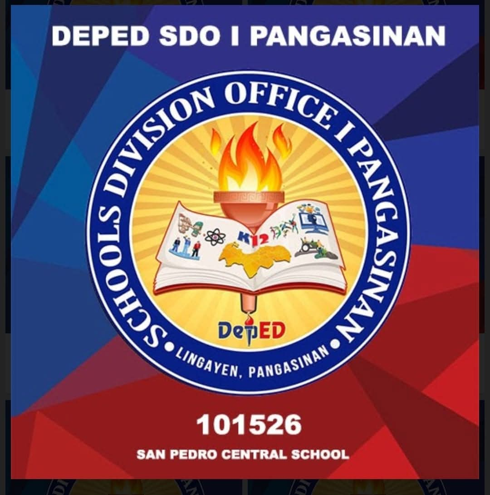
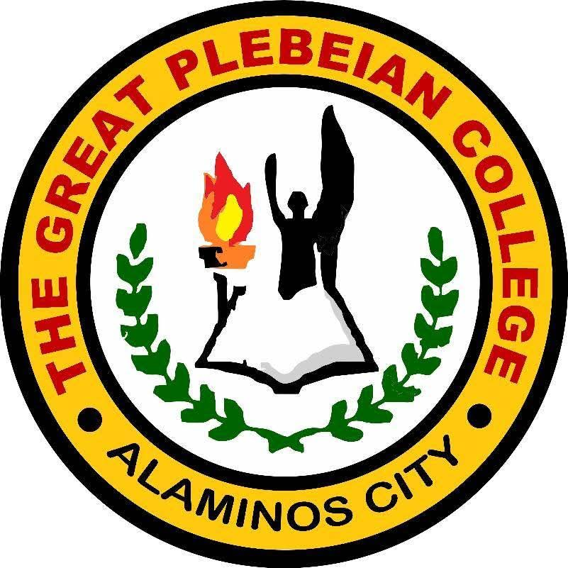
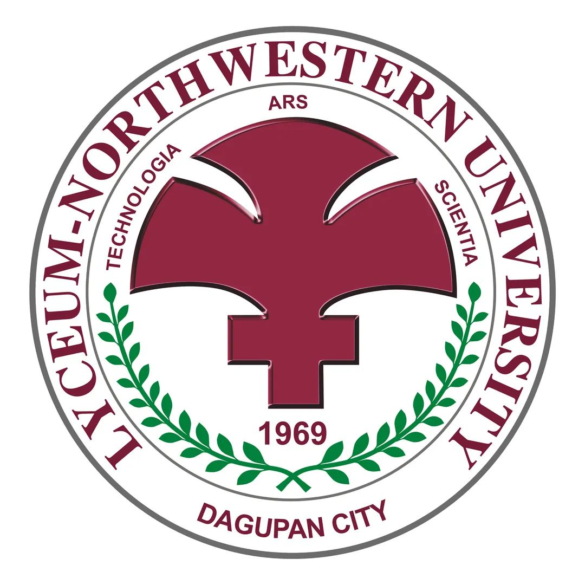
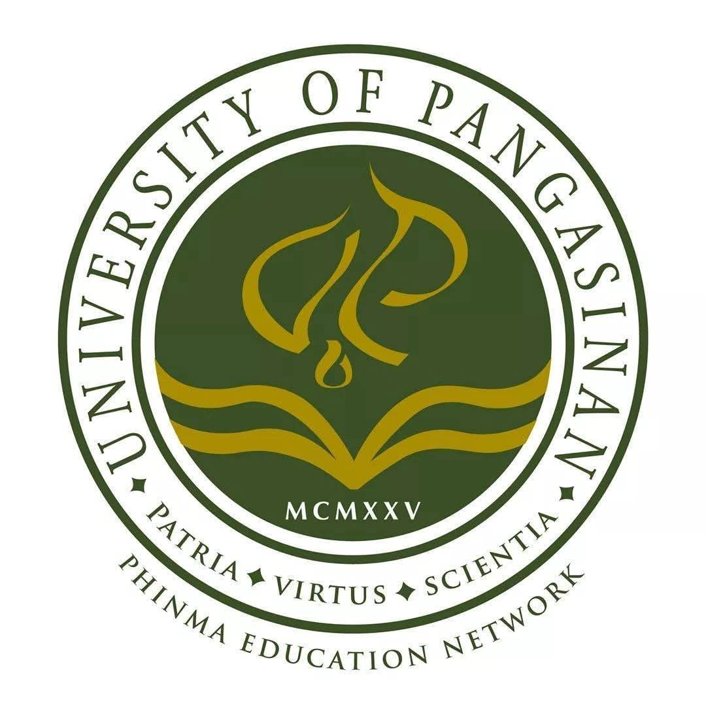

2011–2017 · KINDER–GRADE 5
San Pedro Elementary School
San Pedro, Mabini, Pangasinan
With honors in Kinder and Grades 1, 2, 4, and 5; high honors in Grade 3.
PAGE 02 · PERSONAL INFORMATION
A closer look at the person behind the portfolio: my background, what I am learning, what matters to me, and the professional I hope to become.
Search across the content on this page.
01 · PERSONAL PROFILE
I am a Bachelor of Science in Information Technology student at the University of the Cordilleras in Baguio City, majoring in Networking and Security.
My interests include understanding how digital systems communicate, how security threats affect people and organizations, and how technology can be used thoughtfully. I also enjoy writing and reading, which help me reflect, communicate, and explore different perspectives.
I do not see learning as something that ends with a grade or a certificate. I see it as a process of asking better questions, practicing consistently, learning from mistakes, and becoming more responsible with the knowledge I gain.
MY EDUCATIONAL BACKGROUND
Each stage has contributed to my learning, interests, and the person I am becoming.

2011–2017 · KINDER–GRADE 5
San Pedro, Mabini, Pangasinan
With honors in Kinder and Grades 1, 2, 4, and 5; high honors in Grade 3.
2017–2018 · GRADE 6
Alaminos City, Pangasinan
With honors.
2018–2021 · GRADES 7–8
Alaminos City, Pangasinan
With honors; Theatre and Drum and Lyre Corps.

2021–2022 · GRADE 9
Alaminos City, Pangasinan
With honors.

2022–2023 · GRADE 10
Dagupan City, Pangasinan
With honors; Science Club.
2023–2025 · SENIOR HIGH · STEM
Dagupan City, Pangasinan
Graduated with honors; Best in Research Capstone Project Paper and Best in Product Innovation; Filipino Club.

2025–2026 · FIRST-YEAR COLLEGE
Dagupan City, Pangasinan
BS Civil Engineering. This experience taught me patience and helped me reflect on the path I wanted to pursue.
2026–PRESENT · COLLEGE
Baguio City, Philippines
BS Information Technology, Major in Networking and Security.
PERSONAL DETAILS
Ejelyn C. Garin
19
March 10, 2007
Pangasinan, Philippines
PERSONALITY & PERSPECTIVE
I am an introspective, empathetic, and purpose-driven individual who values integrity, compassion, and personal growth.
I enjoy understanding different perspectives, reflecting deeply on ideas, and finding meaningful ways to contribute to society. I am committed to continuous learning, responsible decision-making, and using my knowledge and skills to make a positive impact on others.
I see personality as a way to reflect on my preferences, not a limit on who I can become. I remain open to learning, changing, and discovering new strengths through experience.
02 · MY STORY SO FAR
My school years included academic recognition, student leadership, scouting, performance activities, and opportunities to work with others. These experiences helped me practice responsibility, cooperation, preparation, and perseverance.
After studying Civil Engineering during my first year of college at PHINMA–University of Pangasinan in 2025–2026, I chose to move toward Information Technology. I am now continuing my studies at the University of the Cordilleras, focusing on Networking and Security.
My long-term direction is connected to information security and justice. I am interested in roles such as Cybersecurity Analyst, Security Operations Center (SOC) Analyst, and Security Engineer, while keeping an eventual interest in cybercrime prosecution. I know these paths require continued study, practical experience, ethical judgment, and patience.
03 · INTERESTS & DEVELOPING SKILLS
These are areas I am interested in or actively developing. I present them as learning goals—not as claims of professional mastery.
Learning how devices, networks, and services connect, communicate, and exchange information.
Exploring digital threats, safe practices, risk awareness, and ways to help protect systems and users.
Practicing coding fundamentals and building websites to strengthen logic, troubleshooting, and design thinking.
Gathering information, asking questions, comparing evidence, and working toward reasoned conclusions.
Using writing, reading, and reflection to express ideas clearly and understand different perspectives.
Keeping privacy, fairness, accountability, and the human impact of technology in mind.
04 · VALUES & WORKING STYLE
I want to understand how and why things work, not simply memorize the answer.
I believe progress can come from consistent effort, honest reflection, and trying again after a difficult lesson.
Technology affects real people. I want my decisions and future work to consider their needs, safety, and dignity.
In security-related work especially, trust, privacy, and responsible use of knowledge matter.
I am willing to be a beginner, ask for help, and improve through practice and feedback.
I hope to use what I learn in ways that are useful beyond my own achievements.
05 · CAREER ROADMAP
Build a strong foundation in programming, networking, operating systems, databases, and information security through coursework and small projects.
Create beginner-friendly projects, maintain clear notes, learn safe and ethical lab practices, and document what each project teaches me.
Work toward relevant training and entry-level opportunities in cybersecurity, such as SOC or security analysis, while exploring the legal and investigative side of cybercrime.
HOBBIES & INTELLECTUAL CURIOSITY
Choose a card to explore a little more about my interests.
Favorite colors: black, white, and pink. Comfort color: yellow.
Favorite book themes: life, humanity, psychology, and philosophy.
“I do not need to know everything today. I need to keep learning with purpose.”
A LITTLE MORE ABOUT MY INTERESTS